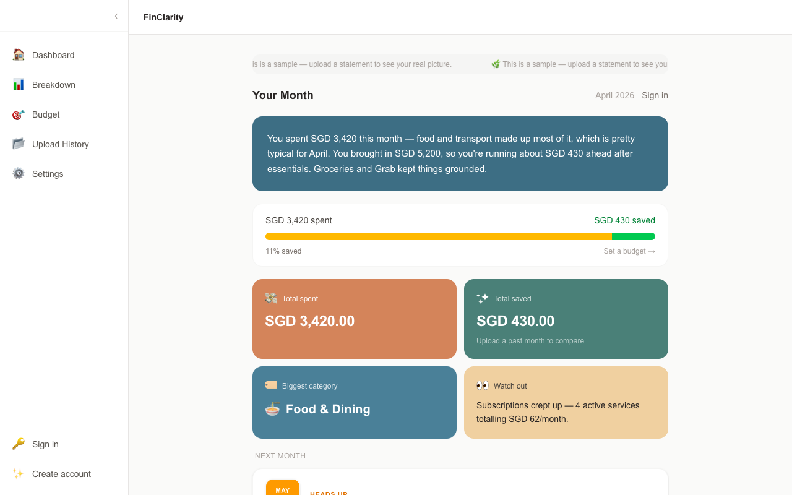
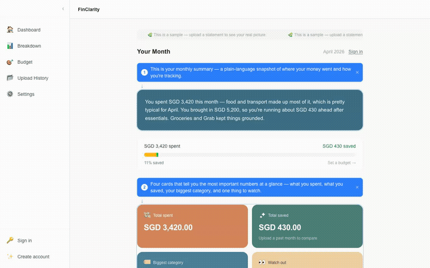

FinClarity
Your money is somewhere. FinClarity shows you where. Upload your bank statements to get one clear monthly picture.

The Idea
I track money across three banks, two wallets, and a spreadsheet that I keep abandoning. FinClarity started as a fix for that, and as a chance to build something end to end. The Singapore market doesn't have a great answer to this either. SGFinDex exists, but bank participation is low and getting fewer, so most people are stuck tracking manually or not at all.
The Pain Points
These are pain points I heard from friends, and also felt myself. They drove the design decisions that followed.
"I check three banking apps and still don't know my full picture. Some of the cashback are stuck on other rewards platforms"
→ Unified view: just upload your statements, regardless of which bank issued the statement. Let us do the work for you. You just need 1 dashboard.
"Connecting accounts officially is practcally non-existent."
→ No live API integration. Statement upload instead of bank credential sharing sidesteps the trust problem and the MAS licensing risk.
"I tried tracking in Excel and whatever spend tracker apps I could find. I gave up after a week."
→ Zero manual entry. Extraction is automatic; the only user action is uploading a PDF.
"I have accounts in a few different currencies. Nothing handles that well."
→ Multi-currency as first-class: SGD default with the original currency always visible inline.
Customer Journey
Here is a typical user journey mapped against a persona so the pain points earlier tie to something relatable. The journey map also shows how FinClarity responds to each pain point, and the emotional arc of the experience.
Justin, 27, juggles money across several banks and e-wallets, no single view of where it's all going
Every month, Justin's money moves across accounts he rarely checks together. He just wants one clear picture without opening all of them separately.
| Awareness | Consideration | Discovery | Trust Test | Habit Loop | |
|---|---|---|---|---|---|
| Touchpoint | Own banking apps | Spreadsheet | FinClarity demo page | Upload modal → Dashboard | Monthly reminder email |
| User Actions | Checks balances across separate apps, tallies spend in his head | Logs transactions manually in Excel and Spend Tracker | Explores a sample dashboard before signing up | Uploads one password-protected statement, then reads the plain-language summary | Returns each month; watches his streak grow |
| Emotion | 😕Overwhelmed | 😒Resigned | 🤔Curious | 😮→😊Nervous, then relieved | 🙂Satisfied |
| Pain Point | No single view of total spending | Manual entry is tedious; gives up within weeks | Wary of yet another finance app | Hesitant to share financial documents | — |
| FinClarity Response | — | — | Demo dashboard with sample data, no signup required to look around | No bank login; password used once in memory, then discarded. Narrative leads with wins, not a guilt trip. | Streak rewards consistency, not spend or savings amount |
Scoping It
Every cut here needed an actual reason, not just "ran out of time."
Cut, and why
- Live bank API / Plaid integration: legal complexity, MAS licensing risk
- Investment recommendations, which would require a regulated financial advice licence
- Saving statement passwords. SG bank passwords are often NRIC/DOB, so storing them is a security and PDPA risk, not a convenience worth the exposure
- XP / levels tied to money, rejected on values grounds: don't signal that more money means higher status
- Social / comparison features, not core to proving the insight loop works
Kept, and why
- Statement upload as the only input: automatic extraction, zero manual entry
- Multi-currency as first-class, not a bolt-on
- Progress-first narrative framing over a raw net-worth number
- A monthly, not daily, check-in loop, frequent enough to build a habit without nagging
Requirements
The PRD turned that scope into criteria specific enough that someone else could check them without asking me what I meant. A few examples:
- App attempts to open the PDF immediately; a password prompt only appears if the file is password-protected
- On success, a small celebratory animation confirms the statement was processed and the password discarded
- When a month was genuinely difficult, the narrative acknowledges the truth first, then pivots to what's actionable
- Sample dashboard data is clearly labelled as demo data, never mistaken for the user's real finances
Technical Approach
One call mattered more than the rest: parsing PDFs with
pdfjs-dist in memory, rather than sending raw
statements through Claude's Files API.
- Upload UI: drag-and-drop, inline password prompt
- Dashboard, breakdown views
- Demo page, sample data
- POST /api/statements/upload: full pipeline
- GET /api/reports, /api/transactions
- Cron: /api/cron/reminders, daily
- PII-excluded extraction prompt
- Transfer detection, amount/date match
- Narrative, observations, nudges
- 6 tables: users, statements, transactions, monthly_reports, check_ins, exchange_rates
- Auth: anonymous + email sessions
- RLS off, accepted for hackathon scope
- Daily check-in reminder emails
- Requires verified sending domain
pdfjs-dist decrypts in
memory instead. It costs Claude's layout understanding, but
bank statements are just line-by-line text, so that trade was
fine.
Building It
Built in stages, each one sitting on something that already worked before I added the next layer.
Acceptance criteria
- Detected internal transfers are auto-excluded from spending totals and surfaced separately under "Savings & Transfers"
- Mismatched statement date ranges trim analysis to the overlapping window and flag what was excluded
- Foreign currency transactions show both the SGD equivalent and original currency inline, with an "as of [date]" exchange-rate note
- Streak counter is based purely on check-in behaviour, never on spending or savings level
Risks encountered
- OCBC merchant-code formatting caused "Other" to dominate spending categories, so the extraction prompt needs a dedicated handling pass
- No login page for returning users: they could sign up and upload but not sign back in, caught late in the build
- pdfjs-dist v5 is ESM-only and threw a
DOMMatrix is not definederror in Node, resolved by switching to the legacy build - Reminder emails depend on Resend domain verification and are untested end-to-end, so they could fail silently
Screenshots
Captured straight from the live demo.
Guided walkthrough

Demo dashboard
App navigation & settings
Iterating Post-Launch
What came after the first ship:
- Login page for returning users, closing the gap flagged at deploy
- Account creation now saves session data to the database instead of only living in browser storage
- Conditional "top card" insight tile, which only appears once a user has 2+ distinct cards to compare
- Monthly budget tracker, added after realizing the narrative alone didn't answer "am I on track?"
- Animated spend-vs-save stat strip for a faster read of the month
Reflection
The real surprise wasn't any single feature. It was that the thing became real instead of staying an idea in my head.